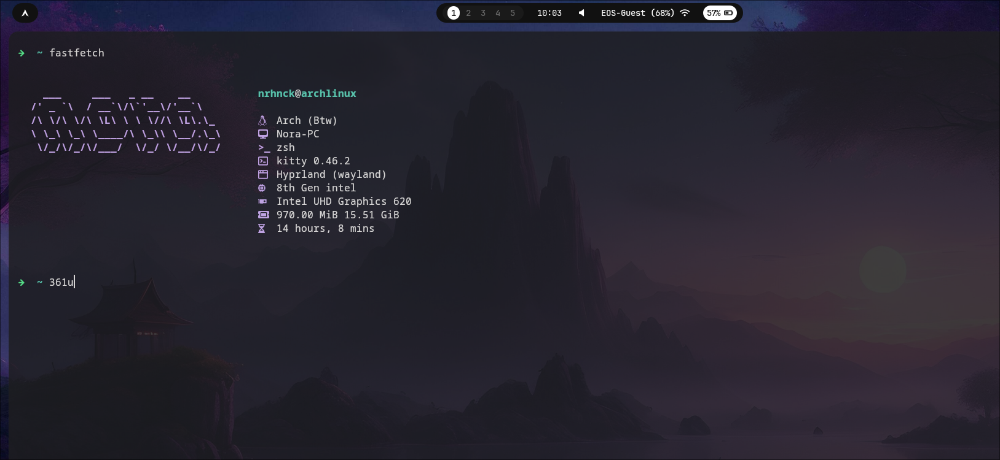

first blog! Feb 26, 2026
this is where i will share thoughts about life, tech, whatever irdk yet.

Hyprland setup! 5/29/26
my current linux setup is hyprland, a tiling window manager. i really like it so far, its very customizable and looks nice. Ive been really into tiling window managers lately, if you multi-task a lot (like me) they are a game changer. Ive set it up on my thinkpad l580 and so far, it is super fast and efficient for cs and general school tasks. Below is my setup!
